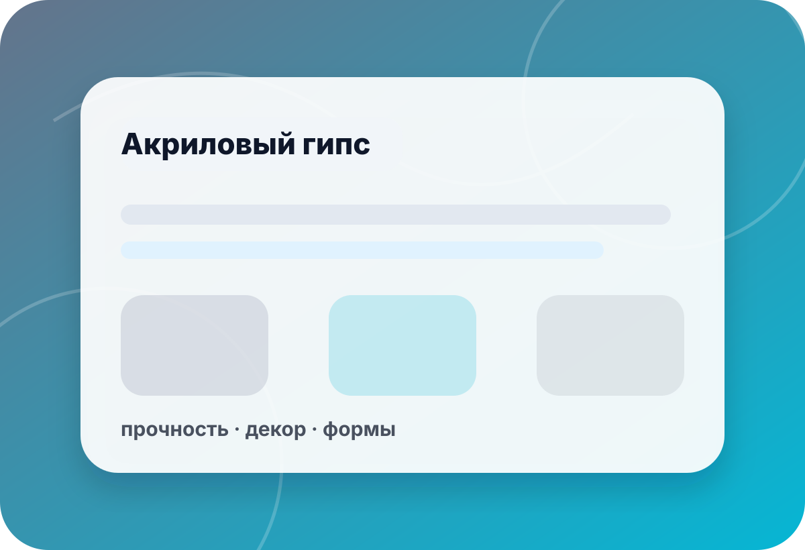
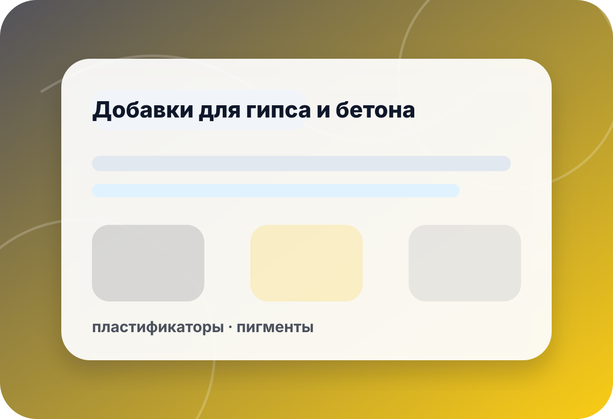
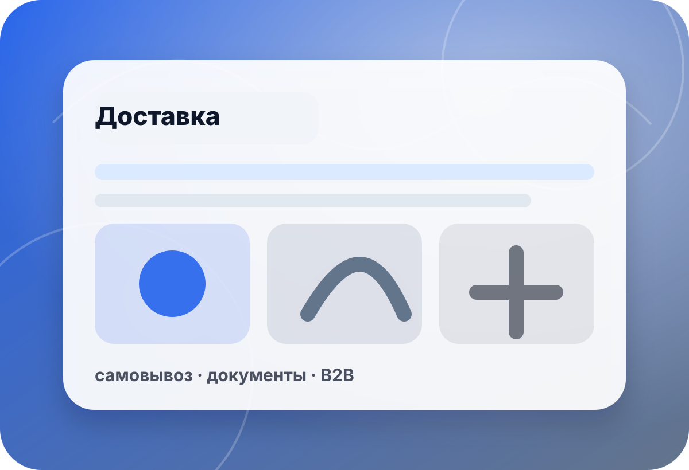

карточка · preview
Фрипласт Аква акриловый гипс 2 кг — запрос под технологию
Карточка оставлена как безопасная preview-точка. Цена, наличие, сроки, свойства и применимость не подтверждаются автоматически: перед заказом нужно уточнить изделие, рецепт, процесс и актуальную доступность фасовки.
- цена
- нет
- наличие
- уточнить
- корзина
- выкл.
- preview
- noindex

следующие шаги
Как безопасно уточнить карточку
Preview не подключён к складу и оплате. Вместо покупки на сайте подготовьте короткий запрос.
без онлайн-заказа
Что важно не считать подтверждённым
Legacy-карточка заменена на safe-preview без коммерческих обещаний.
Фасовка
Название карточки не подтверждает остаток, доступность или возможность резерва.
- наличие
- аналог
- резерв выкл.

◎Технология
Рецепт, вода, форма и режим сушки влияют на результат.
- замес
- форма
- сушка

✦Получение
Доставка, самовывоз и документы согласуются после проверки запроса.
- город
- документы
- контакт
чек-лист
Что указать в запросе
Изделие
Опишите размер, назначение и требования к поверхности.
Указать:размер · фактура · цвет · нагрузкаРецепт
Укажите воду, добавки, пигменты и текущий процесс.
Указать:вода · добавки · пигменты · формаПартия
Нужны объём, фасовка и частота производства.
Указать:2 кг · партия · расход · аналогПолучение
Город и документы помогут быстро проверить следующий шаг.
Указать:город · B2B · доставка · контактмини-бриф
Подготовьте запрос по Фрипласт Аква 2 кг
Форма в preview не отправляет данные на сервер. Скопируйте текст и отправьте его по телефону или почте.